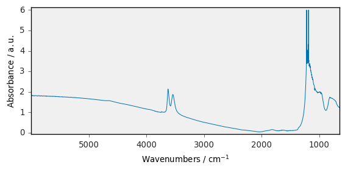
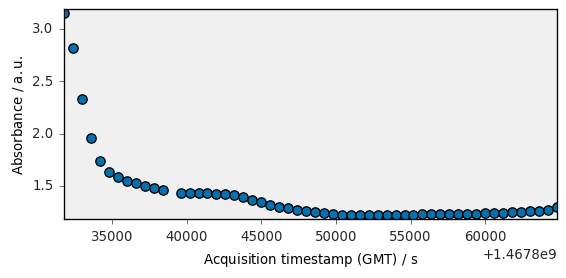
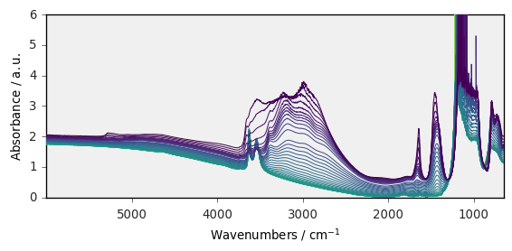
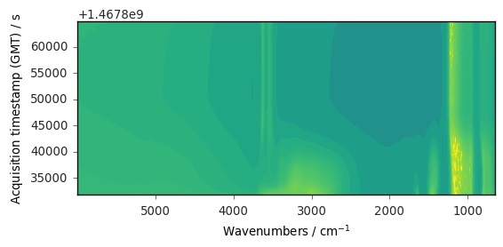
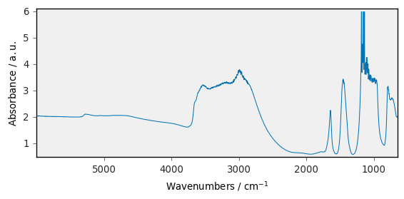
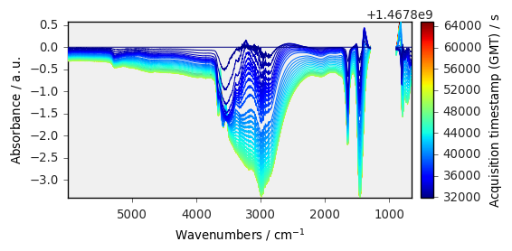

Introduction¶
The SpectroChemPy project was developed to provide advanced tools for processing and analyzing spectroscopic data, initially for internal purposes in the LCS (https://www.lcs.ensicaen.fr).
SpectroChemPy is essentially a library written in python language and which proposes objects (NDDataset, NDPanel(not yet available) and Project) to contain data, equipped with methods to analyze, transform or display this data in a simple way by the user.
The processed data are mainly spectroscopic data from techniques such as IR, Raman or NMR, but they are not limited to this type of application, as any type of numerical data arranged in tabular form can generally serve as the main input.
How to get started¶
Note
We assume that the SpectroChemPy package has been correctly installed. if is not the case, please go to SpectroChemPy installation procedure.
Loading the API¶
Before using SpectroChemPy, we need to load the API (Application Programming Interface): it exposes many objects and functions.
To load the API, you must import it using one of the following syntax.
In the first syntax we load the library into a namespace called scp (you can choose whatever you want - except something already in use):
[1]:
import spectrochempy as scp # SYNTAX 1
nd = scp.NDDataset()
![](data:image/png;base64,iVBORw0KGgoAAAANSUhEUgAAABgAAAAYCAYAAADgdz34AAAAAXNSR0IArs4c6QAAAAlw
SFlzAAAJOgAACToB8GSSSgAAAetpVFh0WE1MOmNvbS5hZG9iZS54bXAAAAAAADx4OnhtcG1ldGEgeG1sbnM6eD0iYWRvYmU6bnM6
bWV0YS8iIHg6eG1wdGs9IlhNUCBDb3JlIDUuNC4wIj4KICAgPHJkZjpSREYgeG1sbnM6cmRmPSJodHRwOi8vd3d3LnczLm9yZy8x
OTk5LzAyLzIyLXJkZi1zeW50YXgtbnMjIj4KICAgICAgPHJkZjpEZXNjcmlwdGlvbiByZGY6YWJvdXQ9IiIKICAgICAgICAgICAg
eG1sbnM6eG1wPSJodHRwOi8vbnMuYWRvYmUuY29tL3hhcC8xLjAvIgogICAgICAgICAgICB4bWxuczp0aWZmPSJodHRwOi8vbnMu
YWRvYmUuY29tL3RpZmYvMS4wLyI+CiAgICAgICAgIDx4bXA6Q3JlYXRvclRvb2w+bWF0cGxvdGxpYiB2ZXJzaW9uIDIuMS4wLCBo
dHRwOi8vbWF0cGxvdGxpYi5vcmcvPC94bXA6Q3JlYXRvclRvb2w+CiAgICAgICAgIDx0aWZmOk9yaWVudGF0aW9uPjE8L3RpZmY6
T3JpZW50YXRpb24+CiAgICAgIDwvcmRmOkRlc2NyaXB0aW9uPgogICA8L3JkZjpSREY+CjwveDp4bXBtZXRhPgqNQaNYAAAGiUlE
QVRIDY1We4xU1Rn/3XPuYx47u8w+hnU38hTcuoUEt/6D2y4RB0ME1BoEd9taJaKh9CFiN7YGp7appUAMNmktMZFoJTYVLVQ0smsy
26CN0SU1QgsuFAaW3WVmx33N677O6XfuyoIxTXqSO/fec+75fd93vt/3/UbDV0aKSZmCpkFMLz3T9utuu2N+o98aDSMBKVAo89z5
y+zEz3ZafcCOfvWdlGCalqKn1Bf71CygTd+mf1esSOnpdMpTb+vWpTZuWVfe3jLPa5tzHYNm0T5N0gpdkkHaDBeGBU6d1/t/fyS8
+/CbqdfUvmsx1PuMgc2bNxv79u1zgd31r+7JH1jbIZKxWRXAcYUQ8IWvBfBXNjEuJWPgMA02NR7C3/pYT9fjdZ3A9tGrWF8YSJHn
qcDz3y7q2T967PZv+gnYJdd1mEZ+62zGDQV/dQgKhmLzDNOXCEWM3j6eTT5Y3w78dOBKJLR1PQf+4ivPj76UPZnssBN+wbM9Aet/
AV81Mf1EEULXYfOobvX2WWQk0aoioXwwSmirOlioY0mu8BIouzYl7P8GV3vpqCCEZvlFz769w08oLDWvyKIyL1asSm28d6WfzA97
ztvvV1kexUMsmhlkULEkuGYmFYC6AvfUrITnwUKl5K79lkjeSSRRTCTbQPd95e1WzMbZSya74XoXAxctCllCnbECMOjZNGRwvzIX
nD85wbkMmKK+U045Dtdi8Qp+SAxU2GTg2bYlC9224pgvmSb54vkVTBQYyhUt2KjAMyMmPjwRQW5Mh2WKwJhlBh6jVGagFM84wZnQ
4bpC0Rt4pk1PbSt0NDcxDA5xryosDHWgtbM0DGZDWLSoiDMDYeQnGVrmOThxLozB0RAaahzkJzjKNqcIQBymJFMkOlN8Dqjpg0XY
Tx5xO/QbmmUrqIjGJznq47TqTaClKYfjp+PInLMwnOdYvtQBZ2XcunQY+VwIo4U4muoFEjVEFE6lQyEUKzHYfgQG9ylCyngU+Cxj
tOqxCDGHcCsOMCs6iQul5ZiStdATYxjMZXDLTUVwLY8Jey4uOh2IxjwsrP8UXJYxUrkZrghBahzV5iXU6gNkq0Z1EzIsUBUSCV2n
EOHo0LVxHCpuxabJJdhi5PFnvw5vLXwXIfNZvD/+JNo/X40NegE54sUaazl+UL8XD1x+FB9Ijjt4EQfdGN6J/x131LwIV9ap/AYs
0x1fz1ZKFbh6A7qKy/By9Dg6G36Ep91vUJJ15Cqr0Z67E8/HzmBrw1OwxWyM+3Mo6BAuSB17oyfx0Oyl2DN0Hqs/70Cx6hBCvESF
UY1ShWXZZEE7OTAYxZzaPH4TuoiusZvRnunFy2NbiHYuBp2vB66srX4vMEjpRKPxKXmnoQ4+Mn4DPiv8CYcrs3GfNUXJLtM+alSO
hrMj/KT+wBNW3+E/2liywNO3iSflbaFva/+stGDTxE0E9Sjaox8HBhxpEamzMGSEaFKg+mjEddzDh1MxTDq3YV1kGBsjfwW3S9Cq
anjmko+ndlb1UR3s6K8JlfphNWq9Ew/7c61T2BB/EbcaNkb8GBaE0tANH7/M34PLdhJDzjIcL9xPbdTG6zyM72Y+wXPHmvB489No
fm0b5HnbQ9Rgp/7DSSd29AeVvPeNyK6JcYl/yQVi5dBjuGvoV/gaJe47s45QUxrDmcYX0MBsdF7egvXZ7+O0vZA4X8QmOQWjlSK7
RDz5wIM30gp9UbWcGjXxhzdDu1SiNSpx6kcQB57rPnr/3dlkZarWLnlRq5oPET1dOCIOk4wALib9eeS5iygfhkd09H0DWphB/+gs
+PcOAS+ssrFmmXXgVfR0de9cpbAJfH3Q1jofW9DZk56dDcVsq9YcsoUMEd1qyLoT3BX1YiyHMJuk97hyjqIoE91t+NcTLeN0ZrfM
oXatZbu6G0h4VG+ibqq0IJVK6cAjo6serG3vSUezCMct0yQeSOFJSUImqb2qbknUpDqlZxE0QZ+ZUpSlZx79h4Nda6zef9dlk121
JDjbR5XggPRZlRnS6bRQRtLpn4++cuie/Yvn2svmNxuLw9WCcYIl4fEoTEGiSTUqJdfgU+8ROqf1iMkLzS389YtNPXc/PH8l8ONB
JZkHD+4JtD04HmVEDWWErmBhzV2/2LB1bemJG6krzv2S6NOHUgtEP0Oif5pE/3fHoruP7N8RiP61GArzSwbUhJJQpXJKiKbfr/3b
IhKq76sKPUdF9NW/LSqfSn6vjv8C45H/6FSgvZQAAAAASUVORK5CYII=)
|
SpectroChemPy's API - v.0.2.5 © Copyright 2014-2021 - A.Travert & C.Fernandez @ LCS |
or in the second syntax, with a wild * import.
[2]:
from spectrochempy import *
nd = NDDataset()
With the second syntax, as often in python, the access to objects/functions can be greatly simplified. For example, we can use “NDDataset” without a prefix instead of scp.NDDataset which is the first syntax) but there is always a risk of overwriting some variables or functions already present in the namespace. Therefore, the first syntax is generally highly recommended.
Alternatively, you can also load only the onbjects and function required by your application:
[3]:
from spectrochempy import NDDataset
nd = NDDataset()
If something goes wrong with during a cell execution, a traceback is displayed.
For instance, the object or method toto does not exist in the API, so an error (ImportError) is generated when trying to import this from the API.
Here we catch the error with a conventional try-except structure
[4]:
try:
from spectrochempy import toto
except ImportError as e:
scp.error_("OOPS, THAT'S AN IMPORT ERROR! : %s" % e)
ERROR | OOPS, THAT'S AN IMPORT ERROR! : cannot import name 'toto' from 'spectrochempy' (/home/travis/miniconda/envs/scpy3.7/lib/python3.7/site-packages/spectrochempy/__init__.py)
The error will stop the execution if not catched.
This is a basic behavior of python : on way to avoid. stoppping the execution without displaying a message is :
[5]:
try:
from spectrochempy import toto # noqa: F811, F401
except Exception:
pass
API Configuration¶
Many options of the API can be set up
[6]:
scp.set_loglevel(scp.INFO)
changed default log_level to INFO
In the above cell, we have set the log level to display info messages, such as this one:
[7]:
scp.info_('this is an info message!')
scp.debug_('this is a debug message!')
this is an info message!
Only the info message is displayed, as expected.
If we change it to DEBUG, we should get the two messages
[8]:
scp.set_loglevel(scp.DEBUG)
scp.info_('this is an info message!')
scp.debug_('this is a debug message!')
[application.py-_log_level_changed INFO] changed default log_level to DEBUG
[__init__.py-info_ INFO] this is an info message!
[__init__.py-debug_ DEBUG] this is a debug message!
Let’s now come back to a standard level of message for the rest of the Tutorial.
[9]:
scp.set_loglevel(scp.WARNING)
scp.info_('this is an info message!')
scp.debug_('this is a debug message!')
Many other configuration items will be further described when necessary in the other chapters.
Units¶
The objets ur, Quantity allows the manipulation of data with units, thanks to pint. (see Units and Quantities)
ur: the unit registry
Quantity: a scalar or an array with some units
[10]:
from spectrochempy import ur # to simplify further writting
ur.cm / ur.s
[10]:
[11]:
x = scp.Quantity(10., ur.cm / ur.s)
x * 2.
[11]:
[12]:
import numpy as np
xa = scp.Quantity(np.array((1, 2)), 'km')
xa[1] * 2.5
[12]:
NDDataset, the main object¶
NDDataset is a python object, actually a container, which can represent most of your multidimensional spectroscopic data.
For instance, in the following we read data from a series of FTIR experiments, provided by the OMNIC software:
[13]:
import os
nd = NDDataset.read_omnic(os.path.join('irdata', 'nh4y-activation.spg'))
Note that for this example, we use data stored in a test directory. For your own usage, you probably have to give the full pathname (see … for the way to overcome this using preferences setting)
Display dataset information¶
Several ways are available to display the data we have jsut read and that are now stored in the dataset
Printing them, using the print function of python to get a short text version of the dataset information.
[14]:
print(nd)
NDDataset: [float32] a.u. (shape: (y:55, x:5549))
A much Longer (and colored) information text can be obtained using the spectrochempy provided print_ function.
[15]:
scp.print_(nd)
name: nh4y-activation
author: travis@travis-job-b5a7aa69-dc6b-4991-a0b4-3d34fc9e310b
created: 2021-01-29 13:36:10.237786+00:00
description: Omnic title: NH4Y-activation.SPG
Omnic filename: /home/travis/miniconda/envs/scpy3.7/lib/python3.7/site-packages/scp_data/testdata/irdata/nh4y-activation.spg
history: 2021-01-29 13:36:10.237786+00:00:imported from spg file /home/travis/miniconda/envs/scpy3.7/lib/python3.7/site-
packages/scp_data/testdata/irdata/nh4y-activation.spg ;
2021-01-29 13:36:10.237786+00:00:sorted by date
DATA
title: Absorbance
values: ...
[[ 2.057 2.061 ... 2.013 2.012]
[ 2.033 2.037 ... 1.913 1.911]
...
[ 1.794 1.791 ... 1.198 1.198]
[ 1.816 1.815 ... 1.24 1.238]] a.u.
shape: (y:55, x:5549)
DIMENSION `x`
size: 5549
title: Wavenumbers
coordinates: [ 6000 5999 ... 650.9 649.9] cm^-1
DIMENSION `y`
size: 55
title: Acquisition timestamp (GMT)
coordinates: [1.468e+09 1.468e+09 ... 1.468e+09 1.468e+09] s
labels: ...
[[ 2016-07-06 19:03:14+00:00 2016-07-06 19:13:14+00:00 ... 2016-07-07 04:03:17+00:00 2016-07-07 04:13:17+00:00]
[ vz0466.spa, Wed Jul 06 21:00:38 2016 (GMT+02:00) vz0467.spa, Wed Jul 06 21:10:38 2016 (GMT+02:00) ...
vz0520.spa, Thu Jul 07 06:00:41 2016 (GMT+02:00) vz0521.spa, Thu Jul 07 06:10:41 2016 (GMT+02:00)]]
Displaying html, inside a jupyter notebook, by just typing the name of the dataset (must be the last instruction of a cell, however!)
[16]:
nd
[16]:
| name | nh4y-activation |
| author | travis@travis-job-b5a7aa69-dc6b-4991-a0b4-3d34fc9e310b |
| created | 2021-01-29 13:36:10.237786+00:00 |
| description | Omnic title: NH4Y-activation.SPG Omnic filename: /home/travis/miniconda/envs/scpy3.7/lib/python3.7/site-packages/scp_data/testdata/irdata/nh4y-activation.spg |
| history | 2021-01-29 13:36:10.237786+00:00:imported from spg file /home/travis/miniconda/envs/scpy3.7/lib/python3.7/site- packages/scp_data/testdata/irdata/nh4y-activation.spg ; 2021-01-29 13:36:10.237786+00:00:sorted by date |
| DATA | |
| title | Absorbance |
| values | [[ 2.057 2.061 ... 2.013 2.012] [ 2.033 2.037 ... 1.913 1.911] ... [ 1.794 1.791 ... 1.198 1.198] [ 1.816 1.815 ... 1.24 1.238]] a.u. |
| shape | (y:55, x:5549) |
| DIMENSION `x` | |
| size | 5549 |
| title | Wavenumbers |
| coordinates | [ 6000 5999 ... 650.9 649.9] cm^-1 |
| DIMENSION `y` | |
| size | 55 |
| title | Acquisition timestamp (GMT) |
| coordinates | [1.468e+09 1.468e+09 ... 1.468e+09 1.468e+09] s |
| labels | [[ 2016-07-06 19:03:14+00:00 2016-07-06 19:13:14+00:00 ... 2016-07-07 04:03:17+00:00 2016-07-07 04:13:17+00:00] [ vz0466.spa, Wed Jul 06 21:00:38 2016 (GMT+02:00) vz0467.spa, Wed Jul 06 21:10:38 2016 (GMT+02:00) ... vz0520.spa, Thu Jul 07 06:00:41 2016 (GMT+02:00) vz0521.spa, Thu Jul 07 06:10:41 2016 (GMT+02:00)]] |
Plotting a dataset¶
First, we can set some general plotting preferences for this dataset
[17]:
prefs = nd.preferences
prefs.reset()
prefs.figure.figsize = (6, 3)
Let’s plot first a 1D spectrum (for instance one row of nd)
[18]:
row = nd[-1]
_ = row.plot()

or a column …
[19]:
col = nd[:, 3500.] # note the indexing using wavenumber!
_ = col.plot_scatter()

2D plots can be also generated as stacked plot
[20]:
_ = nd.plot(method='stack') # or nd.plot_stack()

or as an image plot:
[21]:
prefs.colormap = 'magma'
_ = nd.plot(method='image') # or nd.plot_image()

Note that as we plot wavenumbers as abcissa, by convention the coordinates direction is reversed.
This can be changed by using the keyword argument reversed = False.
Processing a dataset¶
Some arithmetic can be performed on such dataset. Here is an example where we subtract one reference spectrum to the whole nddataset that we have read above (nd).
Lets take, e.g., the last row as reference
[22]:
ref = nd[0]
_ = ref.plot()

Now suppress this ref spectrum to all other spectra of the whole dataset (additionally we mask the region of saturation
[23]:
prefs.colormap = 'jet'
prefs.colorbar = True
nds = nd - ref
nds[:, 1290.:890.] = scp.MASKED
_ = nds.plot_stack()

More details on available on available processing and analysis function will be given later in this user guide.
This was a short overview of the possibilities. To go further you can Continue with …